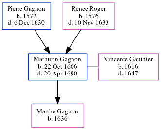

Mathurin Gagnon 1606 - 1690
[ Home ] | [ Calendar ] | [ Surnames Index ] | [ Census Index ] | [ Family History ]The youngest of 3 children of Pierre Gagnon and Renee Roger, Mathurin Gagnon, the eleven times great-uncle of Michele Copp (née Phillips), was born in Tourouvre, Mortagne, Perche, France on Oct 22, 16061 and married Vincente Gauthier (with whom he had 1 child, Marthe) in Laune, Lhome Chamondot, Perche, France in 1636.he arrived in Quebec, Canada in 1640.
He died on Apr 20, 1690 in Montmorency, , Quebec, Canada.
Parents
- Pierre was born in 1572
- Renee was born in 1576
Children
- Marthe was born in 1636
Citations
- Passenger and Immigration Lists Index, 1500s-1900s Online publication - Provo, UT, USA: The Generations Network, Inc., 2006.Original data - Filby, P. William, ed.. Passenger and Immigration Lists Index, 1500s-1900s. Farmington Hills, MI, USA: Gale Research, 2006.Original data: Filby, P. William, ed.. Passe
Family Tree
Generated by ged2site. Last updated on Jun 6, 2024